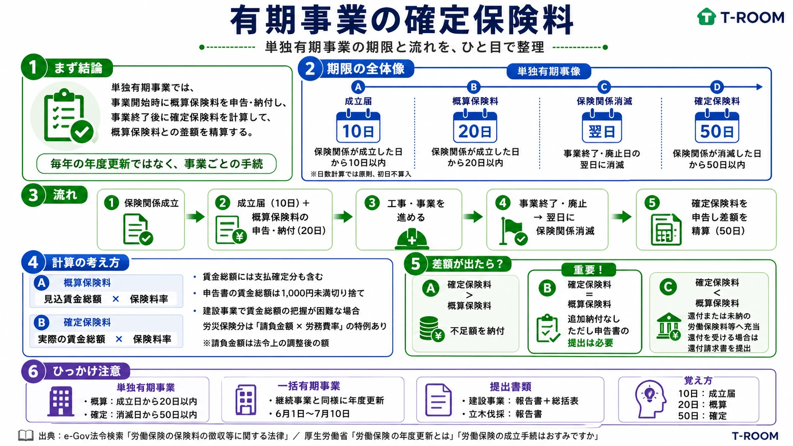

今日のテーマ
労働保険徴収法における、有期事業の確定保険料。
まず結論
有期事業では、事業開始時に全期間の賃金総額の見込額から概算保険料を申告・納付し、事業終了後に実際の賃金総額から確定保険料を計算して差額を精算する。
有期事業とは、工事や立木の伐採など、事業の開始から終了までの期間があらかじめ予定されている事業をいう。
ただし、ここで説明する「概算保険料は20日以内、確定保険料は50日以内」というルールは、複数の工事等をまとめて扱う一括有期事業ではなく、一つの事業ごとに保険関係が成立する単独有期事業のルールである。
事業開始時の手続
単独有期事業については、保険関係が成立した日から20日以内に、概算保険料申告書を提出し、概算保険料を納付しなければならない。
概算保険料 ＝ 事業の全期間に使用する労働者の賃金総額の見込額 × 保険料率
概算保険料の申告期限は、継続事業の成立時に適用される「保険関係成立日から50日以内」と異なり、単独有期事業では「保険関係成立日から20日以内」となる。
なお、概算保険料申告書とは別に、保険関係成立届は、原則として保険関係が成立した日から10日以内に提出する。具体的な日数計算では原則として初日を算入しないため、保険関係成立日の翌日を1日目として数える。
| 手続 | 期限 |
|---|---|
| 保険関係成立届 | 保険関係が成立した日から10日以内 |
| 概算保険料申告書の提出・概算保険料の納付 | 保険関係が成立した日から20日以内 |
事業終了時の手続
有期事業は、事業が終了または廃止された日の翌日に保険関係が消滅する。
事業主は、保険関係が消滅した日から50日以内に、確定保険料申告書を提出し、納付すべき確定保険料がある場合は、その金額を納付しなければならない。
法令上の期限は、単に「工事が終了した日から50日以内」ではなく、「保険関係が消滅した日から50日以内」である。工事が終了した日の翌日に保険関係が消滅し、その保険関係消滅日を基準として確定保険料の申告期限を判断する。
確定保険料の計算
確定保険料 ＝ 事業の全期間に実際に支払った賃金総額 × 保険料率
賃金総額には、実際に支払った賃金だけでなく、支払うことが確定している賃金も含まれる。
申告書に記載する賃金総額については、原則として1,000円未満の端数を切り捨てる。
建設事業における賃金総額の特例
建設事業では、元請事業主が自ら使用する労働者の賃金だけでなく、下請負人が使用する労働者の賃金も含めて労災保険料を算定するのが原則である。
ただし、下請負人が使用した労働者を含む実際の賃金総額を正確に把握することが困難な場合がある。そのため、一定の建設事業では、労災保険料の算定に限り、次の方法で賃金総額を算定する特例が認められている。
賃金総額 ＝ 請負金額 × 労務費率
ここでいう請負金額は、労働保険徴収法施行規則に基づく必要な調整を反映した金額であり、単純に請負契約書上の金額と一致するとは限らない。
この特例によって算出した賃金総額に労災保険率を乗じて、概算保険料や確定保険料を計算する。
概算保険料との差額精算
事業終了後に確定保険料を計算し、すでに納付している概算保険料と比較する。
| 比較 | 処理 |
|---|---|
| 確定保険料 ＞ 概算保険料 | 不足額を確定保険料の申告期限までに納付する。 |
| 確定保険料 ＝ 概算保険料 | 追加納付はない。ただし、確定保険料申告書の提出は必要。 |
| 確定保険料 ＜ 概算保険料 | 還付または未納の労働保険料等への充当の対象となる。還付を受ける場合は所定の還付請求書を提出する。 |
「追加納付がないこと」と「申告書を提出しなくてよいこと」は別である。
二元適用事業との関係
建設事業や立木の伐採事業は、原則として二元適用事業である。二元適用事業では、労災保険と雇用保険の保険関係を別々に取り扱う。
そのため、工事や立木の伐採に係る有期事業では、主としてその事業に係る労災保険料を申告する。雇用保険については、原則として事業主の事務所等に係る継続事業として、労災保険とは別に申告・納付する。
単独有期事業と一括有期事業の違い
| 区分 | 申告・精算 |
|---|---|
| 単独有期事業 | 一つの工事等ごとに保険関係が成立する。開始時は成立日から20日以内、終了時は消滅日から50日以内。毎年の年度更新では精算しない。 |
| 一括有期事業 | 一定の要件を満たす複数の工事等を一つの事業として扱い、継続事業と同様に毎年6月1日から7月10日まで年度更新を行う。 |
一括有期事業では、前年度中に終了した工事等をまとめて確定保険料の申告対象とする。一括有期事業報告書を提出し、建設事業の場合は一括有期事業総括表も提出する。
過去問
「有期事業の事業主は、保険年度ごとに、毎年7月10日までに確定保険料申告書を提出しなければならない。」
答え：誤り
単独有期事業では、保険年度ごとに年度更新を行うのではなく、事業が終了して保険関係が消滅した日から50日以内に、確定保険料申告書を提出するためである。
ただし、「毎年7月10日まで」というルールが継続事業だけに適用されるという説明は正確ではない。一括有期事業についても、継続事業と同様に年度更新を行う。
| 事業 | 確定保険料の申告時期 |
|---|---|
| 継続事業 | 原則として毎年6月1日から7月10日まで |
| 一括有期事業 | 継続事業と同様に毎年6月1日から7月10日まで |
| 単独有期事業 | 保険関係が消滅した日から50日以内 |
ここが狙われる
- 単独有期事業の概算保険料は、保険関係成立日から20日以内に申告・納付する。
- 単独有期事業の確定保険料は、保険関係消滅日から50日以内に申告・納付する。
- 事業が終了した日の翌日に、原則として保険関係が消滅する。
- 単独有期事業は、毎年の年度更新によって精算するものではない。
- 一括有期事業は、継続事業と同様に年度更新を行う。
- 納付すべき差額がなくても、確定保険料申告書は提出する。
- 保険関係成立届の10日、概算保険料の20日、確定保険料の50日を区別する。
今日のまとめ
単独有期事業では、開始時に全期間の見込賃金から概算保険料を申告・納付し、終了後に実際の賃金から確定保険料を計算して差額を精算する。
一括有期事業は単独有期事業と異なり、継続事業と同様に年度更新を行う。
復習用の一言まとめ
単独有期事業は「成立届10日、始まったら20日、終わったら50日」。